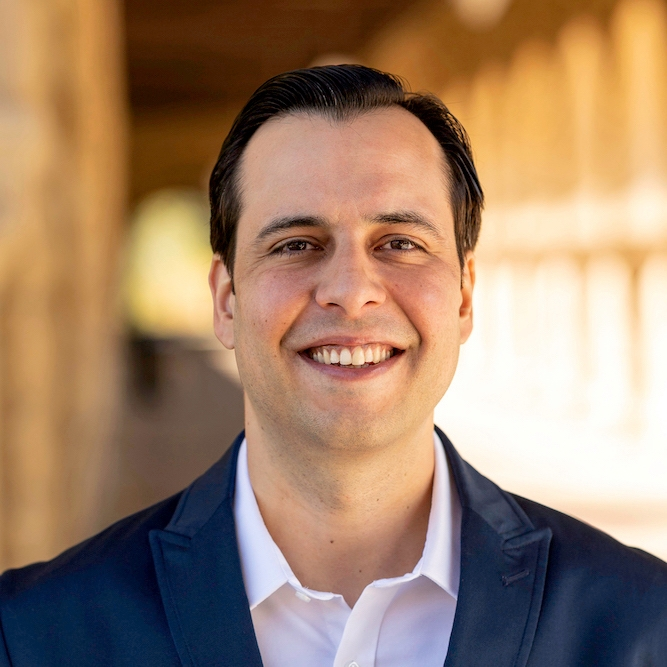

Program Chair

Rafael Gonçalves
Center for Computational Biomedicine, Harvard Medical School
Boston, MA, USA
Program commitee
Nathalie Abadie (IGN / COGIT, France)
Benjamin Adams (University of Canterbury, New Zealand)
Mehwish Alam (FIZ Karlsruhe - Leibniz Institute for Information Infrastructure, AIFB Institute, KIT, Germany)
Eva Blomqvist (Linköping University, Sweden)
Yoan Chabot (Orange Labs, France)
Vinay Chaudhri (Stanford University, United States)
Olivier Corby (INRIA, France)
Oscar Corcho (Universidad Politécnica de Madrid, Spain)
Mathieu D'Aquin (Data Science Institute, National University of Ireland Galway, Ireland)
Ronald Denaux (ExpertSystem, Spain)
Anastasia Dimou (KU Leuven, Belgium)
Mauro Dragoni (Fondazione Bruno Kessler - FBK-IRST, Italy)
Aldo Gangemi (Università di Bologna & CNR-ISTC, Italy)
Raúl García-Castro (Universidad Politécnica de Madrid, Spain)
Andrés García-Silva (ExpertSystem, Spain)
Paul Groth (University of Amsterdam, Netherlands)
Torsten Hahmann (University of Maine, United States)
Maria Hedblom (University of Bremen, Germany)
Krzysztof Janowicz (University of California, Santa Barbara, United States)
Maximos Kaliakatsos-Papakostas (School of Music Studies, Aristotle University of Thessaloniki, Greece)
Tomi Kauppinen (Department of Computer Science, Aalto University School of Science, Finland)
Takahiro Kawamura (National Agriculture and Food Research Organization, Japan, Japan)
Adila A. Krisnadhi (Universitas Indonesia, Indonesia)
Agnieszka Lawrynowicz (Poznan University of Technology, Poland)
Danh Le Phuoc (TU Berlin, Germany)
Pasquale Lisena (EURECOM, France)
Vanessa Lopez (IBM, Ireland)
Albert Meroño-Peñuela (King's College London, United Kingdom)
Nandana Mihindukulasooriya (IBM Research AI, United States)
Till Mossakowski (University of Magdeburg, Germany)
Diego Moussallem (Paderborn University, Germany)
Raghava Mutharaju (IIIT-Delhi, India, India)
Gerhard Navratil (Geoinformation TU Wien, Austria)
Axel-Cyrille Ngonga Ngomo (Paderborn University, Germany)
Andrea Giovanni Nuzzolese (University of Bologna, Italy)
Francesco Osborne (The Open University, United Kingdom)
Heiko Paulheim (University of Mannheim, Germany)
Terry Payne (University of Liverpool, United Kingdom)
José Luis Redondo García (Amazon Research, United Kingdom)
Mariano Rico (Universidad Politécnica de Madrid, Spain)
Giuseppe Rizzo (LINKS Foundation, Italy)
Marta Sabou (Vienna University of Technology, Austria)
Fatiha Saïs (LRI ( Paris Sud University &CNRS8623), Paris Saclay University, France)
Simon Scheider (University Utrecht, Department of Human Geography and Spatial Planning, Netherlands)
Stefan Schlobach (Vrije Universiteit Amsterdam, Netherlands)
Steffen Staab (IPVS, Universität Stuttgart, DE and WAIS, University of Southampton, UK, Germany)
Vojtěch Svátek (University of Economics, Prague, Czechia)
Valentina Tamma (University of Liverpool, United Kingdom)
Ilaria Tiddi (Vrije Universiteit Amsterdam, Netherlands)
Anna Tordai (Elsevier B.V., Netherlands)
Raphaël Troncy (EURECOM, France)
Nicolas Troquard (Free University of Bozen-Bolzano, Italy)
Mauro Vallati (University of Huddersfield, United Kingdom)
Maria Esther Vidal (TIB Leibniz Information Center for Science and Technology, Germany)
Bo Yan (University of California, Santa Barbara, United States)
Enrico Daga (The Open University, United Kingdom)
Joao F. Ferreira (INESC-ID & Instituto Superior Técnico, University of Lisbon, Portugal)
Hans-Georg Fill (University of Fribourg, Switzerland)
Bo Fu (California State University Long Beach, United States)
Jose Manuel Gomez-Perez (expert.ai, Spain)
Michael Gruninger (University of Toronto, Canada)
Christophe Guéret (Accenture Labs, Ireland)
Armin Haller (Australian National University, Australia)
Aidan Hogan (DCC, Universidad de Chile, Chile)
Christoph Lange (Fraunhofer Institute for Applied Information Technology FIT and RWTH Aachen University, Germany, Germany)
Maxime Lefrançois (MINES Saint-Etienne, France)
Maria Maleshkova (University of Siegen, Germany)
Romana Pernisch (University of Zurich, Netherlands)
Petar Ristoski (IBM Research-Almaden, United States)
Mariano Rodríguez Muro (Google, United States)
Anisa Rula (University of Brescia, Italy)
Cogan Shimizu (Kansas State University, United States)
Kavitha Srinivas (IBM, United States)
Lu Zhou (Kansas State University, United States)